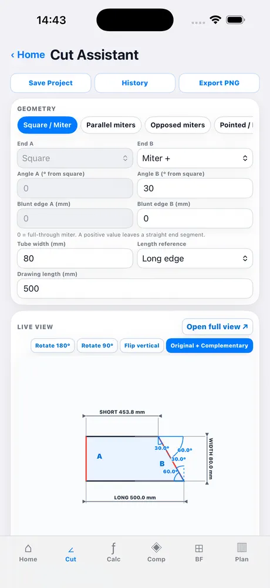
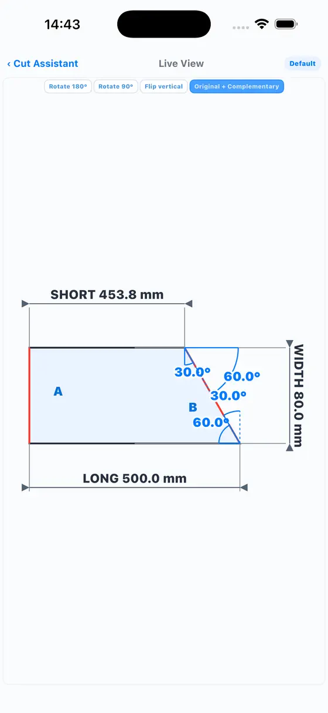
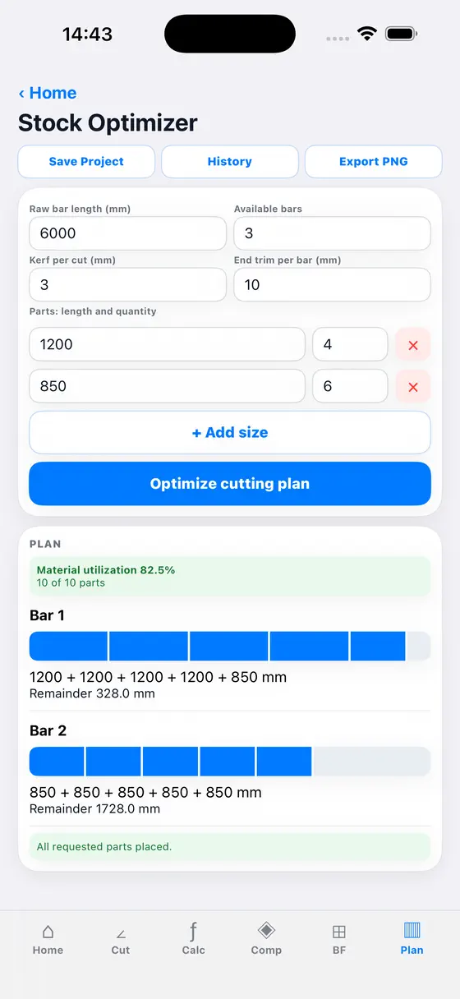
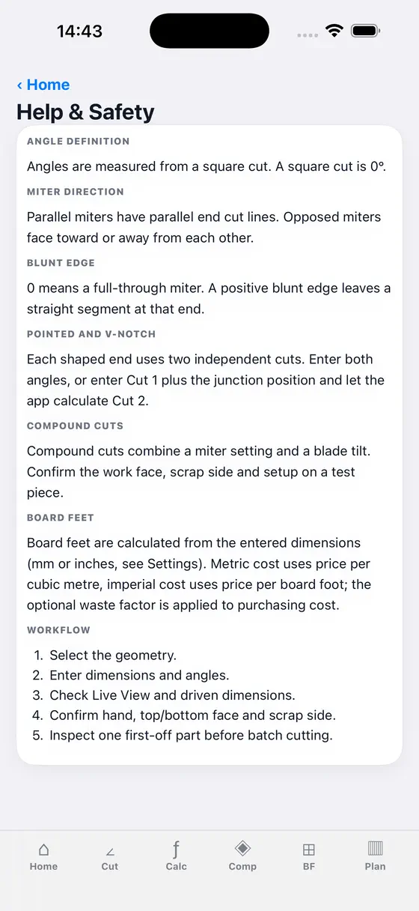

Die Zeichnung sagt 40°. Ihre Säge sagt 50°. Beide haben recht.
Die Zeichnung gibt einen Winkel vor, die Skala Ihrer Maschine liest einen anderen, und irgendwo dazwischen liegt eine Kopfrechnung mit 90 − 40 = 50, die Sie mit Handschuhen machen müssen, bevor das Blatt senkt. Tube Miter Calculator erledigt diese Umrechnung für Sie und zeigt den Winkel, sein Komplement und sein Supplement nebeneinander — neben den langen/kurzen/mittleren Kantenlängen und einer bemaßten Zeichnung, die Sie drehen können, um sie an die Maschine vor Ihnen anzupassen.
Für Werkstatt, Stahlbau-Montage, Geländer- und Überrollbügel-Bauer, Zimmerer und Schreiner sowie DIY-Sanierer — plus Alltagsmathematik (Verbundschnitte, Board Feet, Zuschnittpläne). Funktioniert komplett offline, metrisch oder imperial.


Der Winkel auf Ihrer Zeichnung ist nicht die Zahl auf Ihrer Säge
Jedes Gewerbe kennt das: Plan, Skizze oder Rohrlage geben einen Winkel in einer Messrichtung an, und die Gehrungssäge, Kaltkreissäge, Abschneidsäge, Bandsägentisch oder der Gehrungsanschlag vor Ihnen ist in die andere Richtung graduiert. Eine Ablesung stammt vom Rechtwinkelschnitt, eine andere von der Anschlaglinie, eine dritte ist das stumpfe Gegenstück. Sie rechnen im Kopf — und wenn die beiden Zahlen fast austauschbar wirken, ist genau diese Umrechnung der Ort, an dem Teile sterben.
🏗 Werkstatt & Stahlbau-Teams
Geländer, Brüstungen, Gewächshausrahmen, Baustellengeländer. Die Teilzeichnung gibt den eingeschlossenen Winkel an; die Maschine will etwas anderes. Eine Diskussion später tippt jemand 90 − 47,5 auf die staubige Handy-Tastatur.
🔧 Fertigung & Motorsport
Überrollbügel, Fahrwerksknoten, Auspuffanlagen. Jeder Knoten hat zwei verschiedene Schnittwinkel, und jeder hat ein Komplement, das Sie ebenfalls brauchen — ein Knoten wird zu vier Zahlen, die man auseinanderhalten muss, bevor überhaupt ausgeklinkt wird.
🪚 Zimmerer, Schreiner & DIY
Gewinkelte Rahmen, keilförmige Kästen, Bilderrahmen, Profil- und Fußleistenrücksprünge. Manche Winkel messen vom Rechtwinkel, manche von der Anschlaglinie, und das Umschalten der 90°-Addition mitten im Job macht aus teurem Hartholz Abschnitte.
Warum 40° und 50° das gefährliche Paar sind
40° und 50° sind komplementär (sie ergeben zusammen 90°), also wirken beide völlig plausibel neben derselben Verbindung — und sie unterscheiden sich um nur 10°. Der doppelte Fehler erscheint an der Verbindung, weil beide Enden der Baugruppe geschnitten wurden.
Es ist der schlimmste Bereich für Kopfrechnen:
- 45° ↔ 45° — die Umkehrung ist unsichtbar, niemand fällt etwas auf.
- 30° ↔ 60° — weit auseinander, ein Fehler ist meist mit bloßem Auge erkennbar.
- 40° ↔ 50°, 35° ↔ 55°, 47,5° ↔ 42,5° — nah genug, um austauschbar zu wirken, unterschiedlich genug, um das Teil zu verschrotten. Hier passieren die Fehler tatsächlich.
Und es ist nicht nur 90°: Manche Aufgabestellungen arbeiten auch mit dem supplementären Wert, also kommt 180 − a auf die Liste. Drei plausible Zahlen, eine korrekte Einstellung, ein Rohr.


Was Sie für eine Eingabe bekommen — Beispiel a = 40°
| Ablesung | Was es ist | Wann Sie es brauchen | a = 40° |
|---|---|---|---|
| Gehrungswinkel a | Abweichung vom Rechtwinkelschnitt (ein Rechtwinkelschnitt ist 0°) | Skalen und Winkel, ab Rechtwinkel graduiert | 40° |
| Komplement 90 − a | Die Kehrwert-Ablesung desselben Schnitts | Skalen, bei denen 90° Rechtwinkel bedeutet, und Anschlaglinien-Ablesungen | 50° |
| Supplement 180 − a | Das stumpfe Gegenstück derselben Linie | Aufmaß, Winkelmesser und Ablesungen des eingeschlossenen Winkels | 140° |
Sie wählen weiterhin, welche Zahl Ihre Maschine verlangt — der Punkt ist, dass Sie sie nicht mehr herleiten müssen, mitten im Job, während das Blatt ausläuft.
Hauptfunktionen
Sechs Schnittgeometrien und fünf Werkstattrechner — alle offline in Sekundenbruchteilen gelöst.
∠ Sechs Schnittgeometrien
Rechtwinkel / Gehrung, parallele Gehrungen, gegenüberliegende Gehrungen, Spitze / Spitze, Spitze / V‑Kerbe und V‑Kerbe / V‑Kerbe. Jede Vorlage lädt realistische Standardwerte, damit Sie eine Zahl ändern, nicht sechs.
📏 Nie wieder 90 − a von Hand ableiten
Winkel, das Komplement (90 − a) und das Supplement (180 − a) werden für jeden Schnitt zusammen ausgegeben, neben den langen/kurzen/mittleren Kantenlängen — damit Sie jede Skala treffen, die Ihre Säge aufdruckt, egal ob sie am Rechtwinkel 0° oder 90° anzeigt.
🖼 Bemaßte Live-Ansicht
Ein vollbildiges, maßstäblich gezeichnetes Endprofil mit Maßpfeilen. Um 90° / 180° drehen, vertikal spiegeln und zwischen Original + Komplement bzw. Original + Supplement-Beschriftung umschalten, um das Teil auf Ihrer Bank zu treffen.
◈ Verbundschnitte
Gehrungswinkel und Blattneigung für keilförmige Kästen, Pyramiden und gewinkelte Rahmen. Seitenzahl, Seitenneigung, Panelhöhe und -dicke eingeben — Sägeeinstellungen, Schräghöhe und Kantenversatz erhalten.
⊞ Board Feet & Kosten
Holzvolumen aus Dicke, Breite und Länge, mit Stückzahl, Preis pro Board Foot und optionalem Verschnittfaktor. Metrisch oder imperial.
▥ Zuschnittoptimierer
Rohstab-Länge, Blattbreite und Endbeschnitt plus Ihre benötigten Teile eingeben — er erstellt einen praktischen Zuschnittplan und sagt Ihnen, was übrig bleibt.
ƒ Werkstattrechner
Ein eigens gebautes Keypad mit Grad-Trigonometrie (sin, cos, tan und Umkehrfunktionen) und Kopieren des Ergebnisses mit einem Tipp — kein Kampf mit dem Standard-iOS-Rechner mit Handschuhen.
💾 Projekte & PNG-Berichte
Eingaben unter einem Projektnamen im Verlauf speichern, beim nächsten Job wieder laden und einen PNG-Bericht in Fotos oder direkt ins iOS-Teilen-Menü exportieren.
🔒 Offline & Privat
Kein Internet, keine Anmeldung, keine Analyse-Tools. Einheiten (mm / Zoll), Display wach halten und Zurücksetzen sind die einzigen Einstellungen — alles andere passiert auf Ihrem Gerät.
In Aktion sehen
Vier kurze Loops aus echten Bildschirmaufnahmen auf einem iPhone 17 Pro Max — die App wird von einem scriptierten Durchlauf gesteuert, also ist jeder Tipp, jede Eingabe und jede Neuberechnung auf dem Bildschirm echt. Stumme Autoplay, Untertitel auf dem Bildschirm.
Schnittgeometrien wechseln
Durch alle sechs Vorlagen tippen — Zeichnung und jede Länge aktualisieren sich unterwegs.
Live-Ansicht: drehen, spiegeln, neu beschriften
Vollbildansicht öffnen, um 90° drehen, vertikal spiegeln und die Winkelbeschriftung umschalten.
Werkstattrechner
40 + 50 = 90, dann sin(40°) auf dem integrierten Keypad — danach das Ergebnis mit einem Tipp kopieren.
Die anderen Werkstattmodule
Ein sechseckiger Verbundschnitt bei 20°, eine 12-Bretter-Bestellung, dann Optimieren — jedes Modul rechnet beim Tippen.
So funktioniert es
Vier Schritte von einer Verbindung auf der Bank zu Zahlen auf Ihrer Säge.
Schritt-für-Schritt-Anleitung
Jeder Bildschirm der App, in der Reihenfolge, in der Sie ihn tatsächlich benutzen.






Praxisanwendungen
Wo eine Gehrungsberechnung sich wirklich bezahlt macht.

Geländer & Brüstungen
Das Geländer auf den exakten Steigungswinkel zum Pfosten schneiden, oder einen Fischmaulsattel aushobeln, damit das Rohr den Pfosten sauber umschließt. Die Live-Ansicht drehen, um die Verbindung so zu sehen, wie Sie sie oben an der Treppe halten werden.

Überrollbügel, Fahrwerke & Rahmen
Knotenreiche Rohrstrukturen bestehen meist aus Spitzen- und V‑Kerben-Schnitten. Verbindungswinkel einmal setzen, die langen/kurzen/mittleren Längen erhalten, und jedes Rohr dieses Knotens aus denselben Zahlen schneiden.

Baustellenpassung ohne Empfang
Abgelegene Baustellen, Frachtcontainer und Kellermaschinenräume haben keinen Empfang. Alles in der App läuft auf dem Gerät, also ist die Berechnung da, wenn Sie sie brauchen.
Häufig gestellte Fragen
Die Zeichnung sagt 40°, meine Säge liest 50°. Wer hat recht?
Beide beschreiben denselben Schnitt — sie sind komplementär (sie ergeben zusammen 90°). Der Gehrungswinkel a wird vom Rechtwinkelschnitt gemessen, und 90 − a ist dieselbe Linie andersherum gelesen. Genau deshalb stolpern Menschen über 40/50: Die beiden Zahlen wirken austauschbar, aber die falsche Einstellung setzt 10° Fehler an jedes Ende und 20° an die Verbindung. Die App druckt beide Ablesungen nebeneinander, damit Sie die zweite nie in der Werkstatt ableiten müssen.
Stelle ich den Winkel oder sein Komplement an der Säge ein?
Das hängt davon ab, wie die Skala Ihrer Maschine graduiert ist. Zeigt die Skala am Rechtwinkel 0°, stellen Sie den Gehrungswinkel a ein. Zeigt sie am Rechtwinkel 90° (Anschlaglinien-Graduierung), stellen Sie 90 − a ein. Manche Winkelmesser und Aufgabestellungen nutzen den stumpfen Wert, 180 − a. Verwenden Sie in der Live-Ansicht den Knopf Original + Komplement / Original + Supplement, um die Zeichnung so zu beschriften, wie Ihre Skala gedruckt ist — und prüfen Sie es immer zuerst an einem Reststück.
Wie ist der Gehrungswinkel definiert?
Der Gehrungswinkel wird vom Rechtwinkelschnitt aus gemessen, ein Rechtwinkelschnitt ist also 0°. Die Live-Ansicht zeigt auch die komplementären (90° − Winkel) oder supplementären Werte, damit Sie zur aufgedruckten Skala Ihrer Säge passen.
Was ist der Unterschied zwischen einem Spitzen- und einem V‑Kerben-Schnitt?
Ein Spitzenschnitt verjüngt das Rohrende zu einer einzelnen Spitze und wird verwendet, wo ein Rohr unter einem Winkel auf ein anderes trifft. Ein V‑Kerben- (Fischmaul-) Schnitt entfernt einen V‑förmigen Sattel, damit das Rohr einen runden Pfosten oder ein anderes Rohr umschließt — die klassische Verbindung für Geländer, T‑Stöße und Überrollbügel. Die App beherrscht beide sowie die Kombination Spitze / V‑Kerbe.
Wie wechsle ich zwischen Millimetern und Zoll?
Tippen Sie auf das Zahnrad auf dem Startbildschirm und wählen Sie Metrisch oder Imperial. Vorhandene Werte werden automatisch umgerechnet und die Wahl wird gemerkt.
Warum kann ich keinen Bericht in Fotos speichern?
Die App benötigt die Berechtigung „Nur Fotos hinzufügen“. Aktivieren Sie sie unter iOS-Einstellungen → Datenschutz & Sicherheit → Fotos → Tube Miter Calculator. Sie können stattdessen immer die Option Teilen verwenden.
Braucht die App eine Internetverbindung?
Nein. Alle Berechnungen und gespeicherten Projekte bleiben auf Ihrem Gerät. Kein Konto, keine Analyse-Tools, kein Tracking — siehe die Datenschutzrichtlinie.
Kann ich einen Job speichern und später darauf zurückkommen?
Ja. Speichern Sie die Eingaben unter einem Projektnamen im Verlauf und laden Sie sie später wieder — für jedes Modul separat (Schnitt, Verbund, Board Feet, Zuschnitt). Einträge, die Sie nicht mehr brauchen, löschen Sie im selben Bereich.
Funktioniert sie auf dem iPad?
Ja. Es ist eine universelle App mit breiterem Layout auf dem iPad und voller Unterstützung der Bildschirmausrichtung.
Wie genau sind die Ergebnisse?
Die Mathematik ist exakt für ideale Geometrie; die tatsächliche Genauigkeit hängt davon ab, wie gut Ihre Eingaben zum Material passen — gemessener Durchmesser, Wandstärke, Verbindungswinkel und Blattbreite. Schneiden Sie immer zuerst ein Erstlingsteil und prüfen Sie die Passung, bevor Sie in Serie schneiden.
Wie erreiche ich den Support?
Schreiben Sie an wangning.engineer@outlook.com. Übliche Antwortzeit: 24–48 Stunden.
Sicherheitshinweis
Ergebnisse sind Einrichtungshilfen. Vor jeder Serie: in welche Richtung Ihre Skala graduiert ist bestätigen (0° am Rechtwinkel oder 90° am Rechtwinkel), dann Endidentität, Ober-/Unterseite, Seite der Stumpfkante, Seite des Verschnitts und Blattbreite prüfen und ein Erstlingsteil kontrollieren. Gerade bei nahezu symmetrischen Paaren wie 40° / 50° kostet ein Testschnitt eine Minute; der falsche kostet das Rohr. Tragen Sie Augen- und Gehörschutz und folgen Sie der Anleitung Ihrer Maschine.
App holen
Tube Miter Calculator ist im App Store für iPhone und iPad erhältlich.